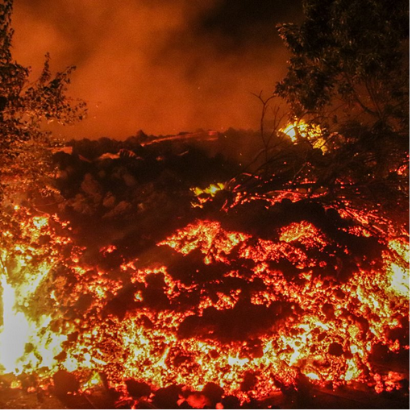
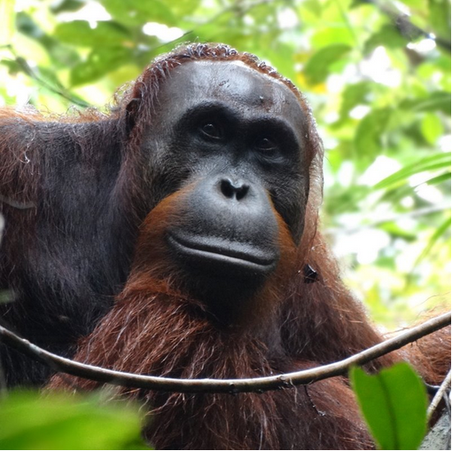
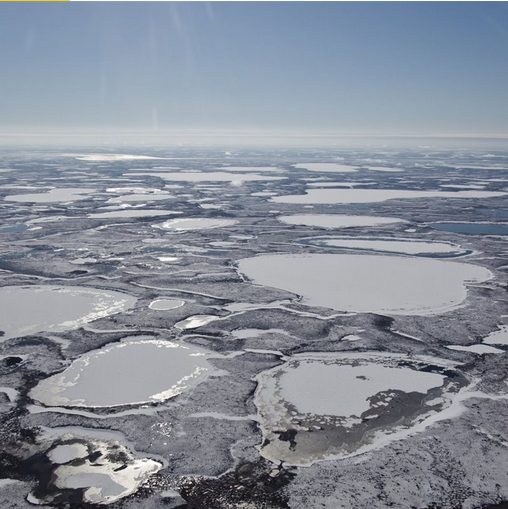
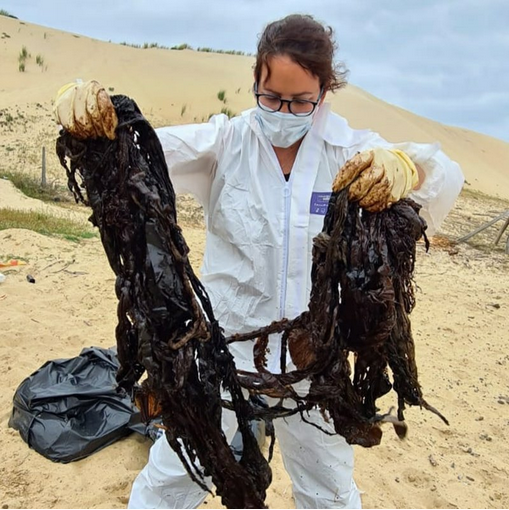
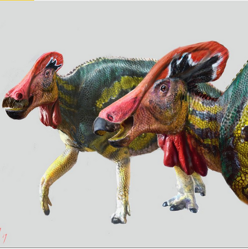
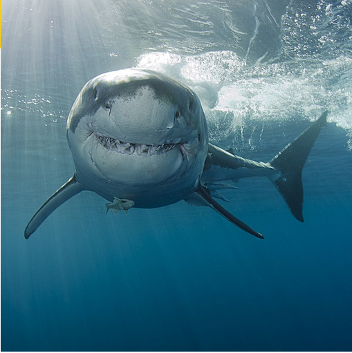
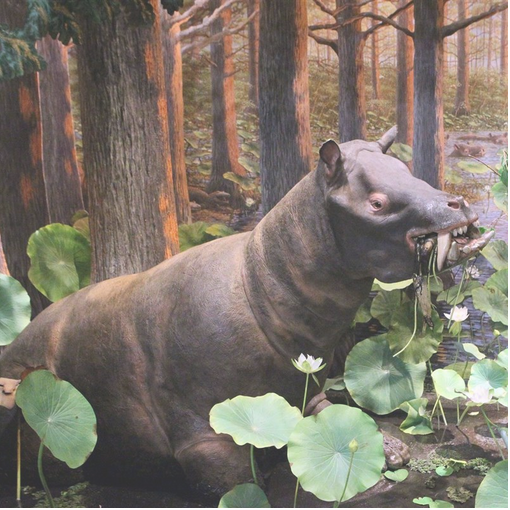
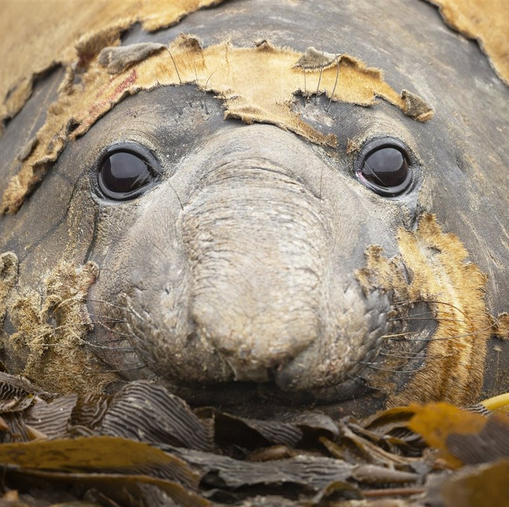

Inicio
Videos
Fotos
Noticias
¿Sabías qué?
Programación de TV
Nuestras noticias más relevantes

El Nyiragongo entra en erupción

Los orangutanes de Borneo están, literalmente, muriendo de hambre

El deshielo del permafrost, clave en el futuro del planeta
La sostenibilidad de los alimentos no depende solo de dónde provengan

Encuentran el cadáver de un cetáceo con 16 kilos de plástico en el estómago

Tlatolophus galorum, el nuevo dinosaurio identificado en México

Los tiburones usan el campo magnético terrestre para desplazarse

Hallada la evidencia más temprana de mamíferos terrestres costeros

Elefantes marinos para estudiar las profundidades del océano
Twitter
Facebook
Instagram
Condiciones de Uso
Política de Privacidad
© 2021 National Geographic Latinoamérica